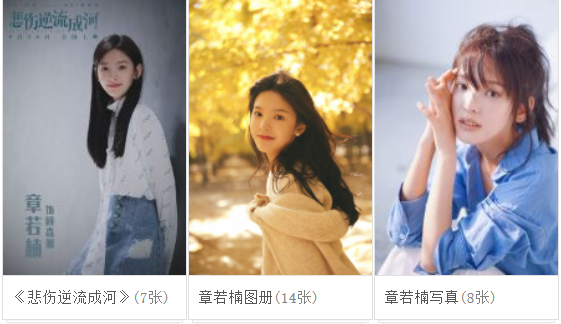

目录
基本信息
演艺经历
-------------------------------------------------------------
主要作品
社会活动
-------------------------------------------------------------
最新资讯
演艺经历
2017年12月，参演由落落执导的青春校园电影《悲伤逆流成河》，并在片中饰演顾森西的双胞胎姐姐顾森湘，温柔善良，但最终她因校园霸凌事件而坠楼身亡；该片是章若楠个人电影处女作，于2018年9月30日在全国上映。
2019年5月，主演由落落执导的都市奇幻电影《如果声音不记得》，并在剧中饰演与辛唐同校的民歌系女孩吉择 。之后，还与李易峰、陈星旭、张馨予、肖央等合作出演的火箭军题材剧《号手就为》
2020年2月16日，由赵薇监制的都市情感剧《谁都渴望遇见你》在爱奇艺上线，章若楠在剧中饰演阳光女孩罗溪，能让事业狂人张泯消除头疼症状 。2月25日，确认与许光汉主演都市情感青春片《你的婚礼》。4月25日，主演的古装爱情轻喜剧《师爷请自重》在优酷上线，章若楠在剧中饰演俏皮可爱的话本写手兼县衙师爷谭玲音 。

社会活动
2019年5月，章若楠参加《中国电影报道》“青春季·进校园”系列活动，走进中国农业大学，了解这里的师生们所做的环保工作，与同学们一起倡导环保 。6月，章若楠支持“益呼百行”公益活动，呼吁关注呼吸健康与尘肺病人
获奖记录
2019凤凰网时尚之选颁奖盛典“年度时尚活力先锋”